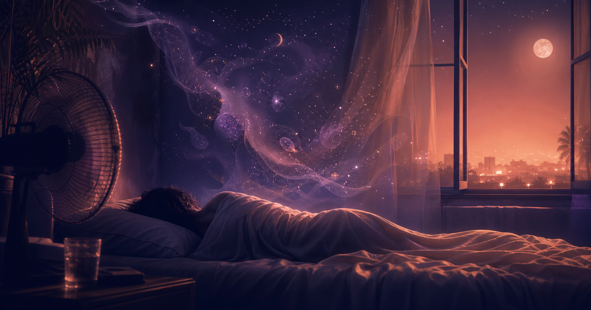

Canicule, sommeil et rêves : pourquoi les nuits chaudes perturbent le rappel des rêves
Quand la chaleur reste dans la chambre, le problème ne se limite pas à l'endormissement. Les nuits chaudes peuvent fragmenter le sommeil, multiplier les micro-réveils et changer la façon dont vous vous souvenez de vos rêves le matin.

Cette page est informative et ne remplace pas un avis médical. En période de vigilance chaleur, suivez les consignes officielles locales, surtout pour les personnes fragiles. En cas de malaise, confusion, troubles du comportement, fièvre élevée, déshydratation suspectée ou inquiétude pour une personne vulnérable, contactez rapidement un professionnel de santé ou les secours locaux.
Pourquoi la chaleur casse le sommeil
Pour dormir profondément, le corps doit pouvoir évacuer de la chaleur. Une chambre trop chaude complique cette baisse naturelle de température. Résultat : l'endormissement peut être plus long, le sommeil plus léger et les réveils plus fréquents.
L'épisode de chaleur de juin 2026 en Europe occidentale rappelle ce point simple : ce sont souvent les nuits qui épuisent. Quand l'air ne se rafraîchit pas, le corps récupère moins bien. Une étude sur la chaleur ambiante et le sommeil, fondée sur des millions de nuits mesurées par objets connectés, associe les températures nocturnes élevées à une durée de sommeil plus courte, surtout en été. Une revue sur l'environnement thermique décrit aussi des effets possibles sur les éveils, le sommeil profond et le sommeil paradoxal.
Pourquoi les rêves semblent plus intenses
La chaleur ne rend pas forcément les rêves plus intenses en eux-mêmes. Elle peut surtout modifier les conditions dans lesquelles vous vous réveillez. Or le rappel des rêves dépend beaucoup du moment du réveil : on se souvient mieux d'un rêve quand on sort du sommeil pendant ou juste après une phase riche en activité onirique.
Une nuit fragmentée peut donc produire une impression paradoxale : vous dormez moins bien, mais vous vous souvenez davantage de morceaux de rêves. Ces fragments peuvent paraître vifs, confus ou interrompus, parce que le réveil arrive au milieu d'une scène au lieu d'arriver après une transition naturelle.
Ce que noter le matin
En période de chaleur, ne cherchez pas une interprétation trop rapide. Notez d'abord les conditions de la nuit : température ressentie, réveils, soif, fenêtre ouverte, ventilateur, bruit, heure du réveil. Ensuite seulement, ajoutez les images du rêve et les émotions dominantes.
Cette distinction évite de tout attribuer au symbole lui-même. Un rêve d'eau, de feu, de poursuite ou de fatigue peut avoir un sens personnel, mais il peut aussi être amplifié par une nuit inconfortable. Un journal de rêves devient utile quand il garde les deux couches : le rêve et le contexte du sommeil.
Que faire ce soir sans surinterpréter vos rêves
Le meilleur réflexe est simple : notez assez pour comprendre la nuit, sans transformer chaque image en diagnostic. Commencez par cinq repères : la température ressentie, le nombre de réveils, la soif ou la bouche sèche, le bruit ou la lumière, puis une phrase sur le rêve.
Si écrire au réveil vous coûte trop, dictez une note de trente secondes. Vous pourrez revenir plus tard sur le récit, comparer avec vos habitudes de rappel et repérer ce qui vient du rêve lui-même ou d'une nuit hachée.
Un rituel plus doux pour les nuits chaudes
Le bon objectif n'est pas de contrôler vos rêves pendant une canicule. C'est de réduire la friction au réveil. Si vous avez mal dormi, une note vocale de trente secondes suffit : “réveil à 4 h, chambre chaude, rêve de gare, impression de retard, émotion anxieuse”. Ce format protège les détails sans vous demander un effort d'écriture au pire moment.
Noctalia est justement pensé pour ce moment fragile : capturer vite, puis revenir plus tard sur les symboles, les motifs et les émotions avec une capture vocale ou une exploration guidée.
Capturez le rêve avant que la matinée l'efface
Une note vocale courte suffit pour garder les détails : contexte de sommeil, images, émotion et sensation au réveil. Noctalia vous aide ensuite à relire le rêve sans le transformer en diagnostic.
Questions fréquentes
Pourquoi ai-je l'impression de rêver davantage quand il fait chaud ?
Vous ne rêvez pas forcément davantage. Les réveils brefs peuvent surtout rendre certains fragments plus faciles à retenir.
La chaleur provoque-t-elle des cauchemars ?
La chaleur peut rendre la nuit plus inconfortable et fragmentée, ce qui peut colorer le souvenir au réveil. Elle ne suffit pas à expliquer tous les cauchemars.
Faut-il interpréter différemment un rêve pendant une canicule ?
Oui, en ajoutant le contexte. Avant d'interpréter un symbole, notez la chaleur, les réveils, la soif et la qualité générale du sommeil.
Sources et repères
- Météo-France Vigilance pour suivre les alertes locales.
- Santé publique France pour les repères sanitaires liés aux fortes chaleurs.
- The Guardian, 19 juin 2026, sur la vague de chaleur en Europe occidentale.
- Ambient heat and human sleep, étude sur chaleur nocturne et durée de sommeil.
- Effects of thermal environment on sleep and circadian rhythm, revue sur environnement thermique et architecture du sommeil.
- Neural correlates of self-generated imagery and cognition throughout the sleep cycle, revue sur l'imagerie mentale et les rapports de rêve selon les stades du sommeil.